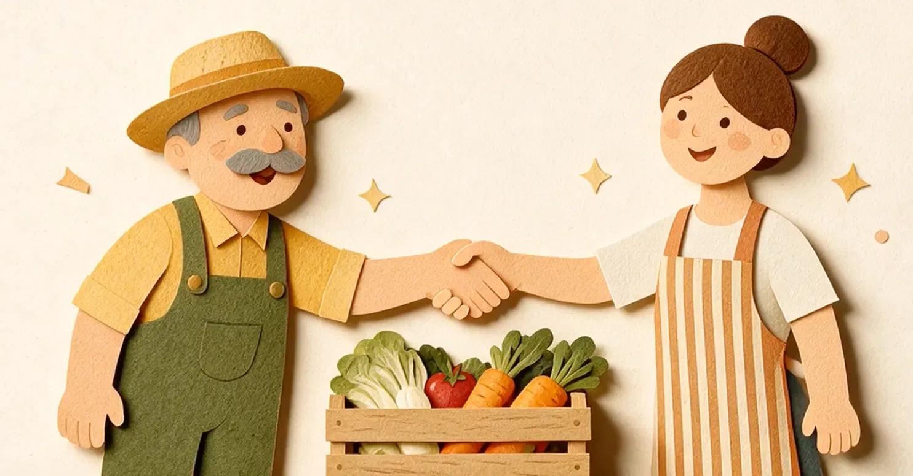

Produtor cadastra a colheita
Quem planta anuncia o que colheu de forma rápida e prática, mesmo sem internet.
Menos intermediários, menos desperdício.
Muita comida se perde entre o campo e a mesa. Aqui, produtores rurais vendem direto para restaurantes, feirantes e ONGs, impulsionando a agricultura sustentável.

Alinhado à ODS 2: Fome Zero e Agricultura Sustentável.
Conectamos toda a cadeia produtiva em poucos passos.
Quem planta anuncia o que colheu de forma rápida e prática, mesmo sem internet.
Restaurantes e feirantes encontram alimentos frescos de produtores próximos.
O que não foi vendido segue de forma segura para ONGs que atendem quem mais precisa.
O produtor cadastra safras, quantidades e preços sem internet. Quando a conexão volta, tudo é sincronizado.
A localização aproxima produtores e restaurantes, priorizando quem está mais perto.
Pedidos da mesma região seguem juntos na mesma rota, e o frete fica mais barato.
Ao tirar intermediários do caminho, o AgroConecta fortalece a agricultura familiar e facilita o acesso a alimentos frescos.
Alinhado à Meta 2.3 dos Objetivos de Desenvolvimento Sustentável da ONU.
a mais na margem de lucro do produtor.
a menos no custo de compra dos restaurantes.
a menos de desperdício na colheita e no transporte.
a mercados locais para pequenos produtores.